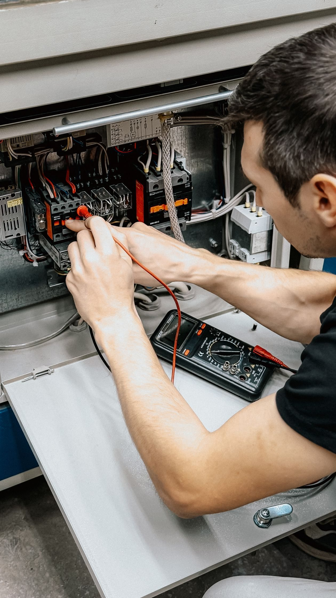
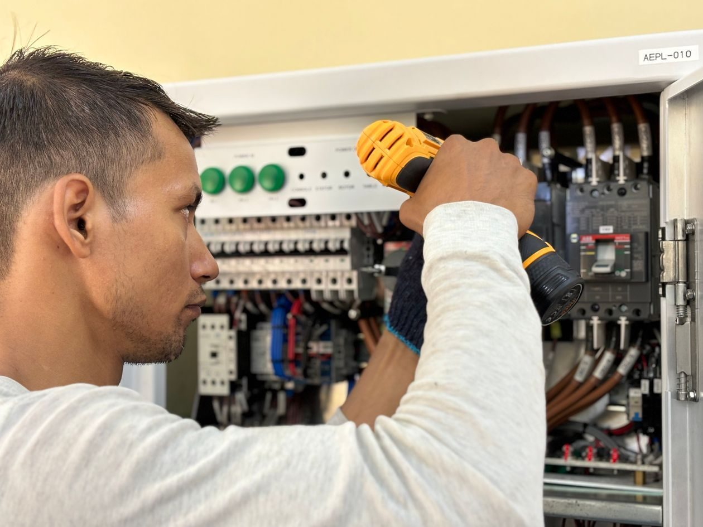
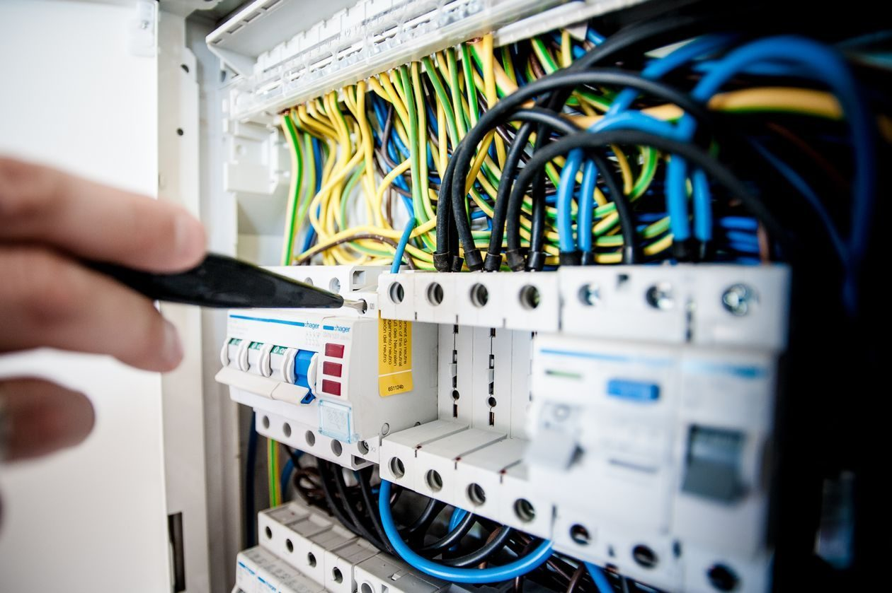

Lubbock Electric Company
An industrial electrical company in Lubbock, serving West Texas. Not a utility.
Stock photo: An electrician diagnosing an electrical panel with a multimeter. This is not a photo of Lubbock Electric Company.
About
Lubbock Electric Company is an industrial electrical company in Lubbock, Texas, not a utility. It sells and services electric motors, including rewinding, and works on air compressors, programmable controls, variable frequency drives, gear reducers, power transmission, cotton gin hydraulics, control panel fabrication, systems integration, and commercial and industrial LED lighting, across a West Texas service area. Its own site is a single page of FAQs and a contact form, so this concept gives the services a proper home.
Rating: 4.5 from 10 Google reviews.
Services
Electric motor sales and service
Electric motor sales and service, including rewinding.
Air compressors
Air compressors, sold and serviced.
Programmable controls
Programmable controls, for industrial systems.
Variable frequency drives
Variable frequency drives, for motor control.
Gear reducers and power transmission
Gear reducers and power transmission equipment.
Cotton gin hydraulics
Cotton gin hydraulics, for gin operations.
Control panel fabrication
Control panel fabrication, built for the job.
Systems integration
Systems integration, tying controls together.
Commercial and industrial LED lighting
Commercial and industrial LED lighting, for workplaces.
West Texas service area, 24/7 emergency service
Lubbock Electric Company serves West Texas from its 34th Street shop. Hours are Monday to Friday, 8:00 AM to 5:00 PM, and the site states 24/7 emergency service. Call (806) 744-2336 or email sales@lubbockelectric.com to ask about a motor, a control, or a lighting job.
Gallery


All gallery photos are stock photos, labeled as such. They show the kind of work and setting described on this page, not this business.
Visit
Address: 1108 34th St, Lubbock, TX 79411
Hours: Monday to Friday 8:00 AM to 5:00 PM, with 24/7 emergency service stated on the site.
Phone: (806) 744-2336
Email: sales@lubbockelectric.com
Contact
Call (806) 744-2336 Email sales@lubbockelectric.com
Lubbock Electric Company serves Lubbock, TX. Questions? Call (806) 744-2336.